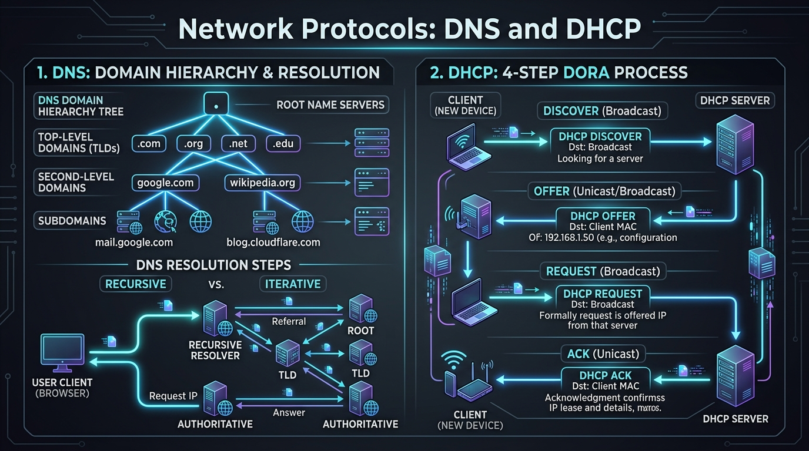

Master DNS domain hierarchy & resolution, DHCP 4-step DORA IP allocation process, and end-to-end email delivery protocols (SMTP, POP3, IMAP).
DNS (Domain Name System - UDP/TCP Port 53) acts as the "phonebook of the Internet", translating human-friendly domain names (e.g. www.google.com) into 32-bit IPv4 or 128-bit IPv6 addresses.
.): Top of tree, managed by 13 root server clusters globally..com, .org, .edu) and Country-Code TLDs (.us, .uk, .in).google in google.com).www, mail, blog).| Record Type | Full Name | Description / Purpose |
|---|---|---|
| A | IPv4 Address Record | Maps domain name to 32-bit IPv4 address (e.g. example.com → 93.184.216.34). |
| AAAA | IPv6 Address Record | Maps domain name to 128-bit IPv6 address (e.g. example.com → 2606:2800:220:1...). |
| CNAME | Canonical Name Record | Alias connecting one domain name to another domain name. |
| MX | Mail Exchange Record | Specifies mail servers responsible for receiving email for the domain. |
| TXT | Text Record | Holds human or machine-readable text (used for SPF, DKIM email security). |
| NS | Name Server Record | Specifies authoritative DNS servers for the domain zone. |
| PTR | Pointer Record | Used for Reverse DNS Lookup (maps IP address to domain name). |
| SOA | Start of Authority | Contains administrative zone information, serial number, and refresh timers. |
DHCP (Dynamic Host Configuration Protocol) automatically assigns IP addresses, subnet masks, default gateways, and DNS servers to client devices on a local network using **UDP Ports 67 (Server) and 68 (Client)**.
DHCPDISCOVER packet (Dst MAC FF:FF:FF:FF:FF:FF) to find local DHCP servers.DHCPOFFER offering an available IP address, subnet mask, and lease time.DHCPREQUEST accepting the offered IP address.DHCPACK confirming the lease agreement. Client configures its network interface.DHCPDISCOVER, Windows clients automatically assign a self-configured APIPA address (169.254.0.0/16) for local link communication.

End-to-End email delivery relies on separate protocols for **Sending (Submission & Relay)** and **Retrieving (Mailbox Access)**.
| Protocol | Role | Default Port | Secure Port (SSL/TLS) | Key Operating Characteristic |
|---|---|---|---|---|
| SMTP | Mail Submission & Push Relay | TCP 25 / 587 | TCP 465 | Pushes mail from client to server & server-to-server. |
| POP3 | Mailbox Retrieval | TCP 110 | TCP 995 | Downloads email to client and deletes from server (offline local storage). |
| IMAP | Mailbox Synchronization | TCP 143 | TCP 993 | Keeps email stored on server & syncs folders across multiple devices in real-time. |